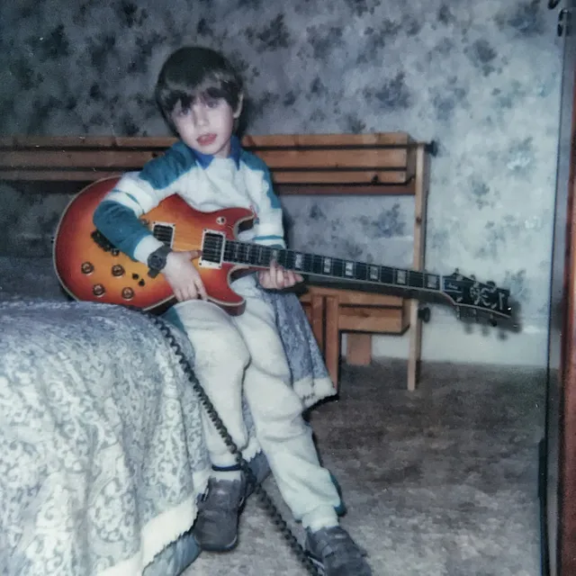
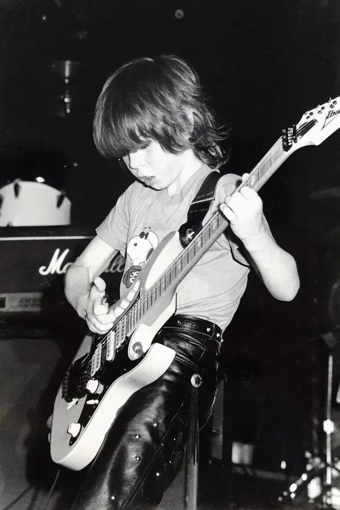
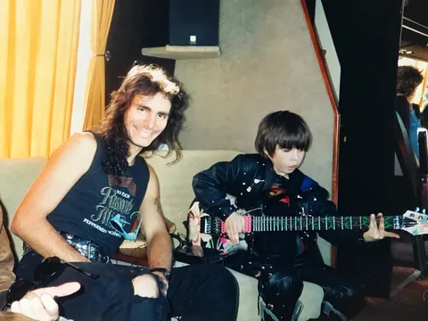
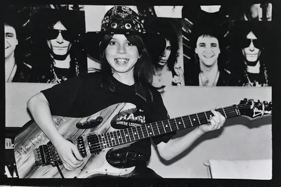
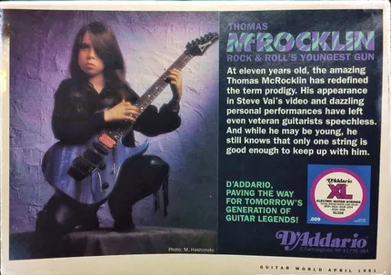
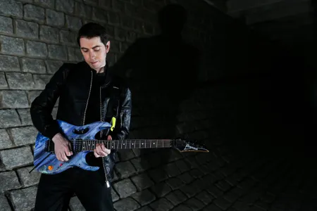
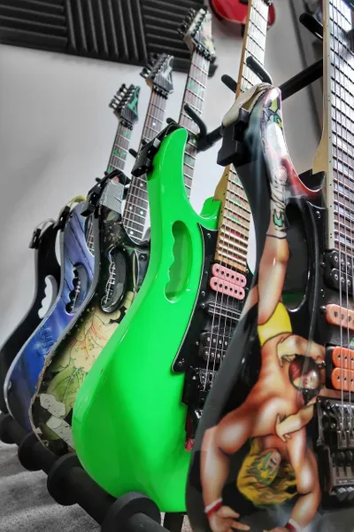
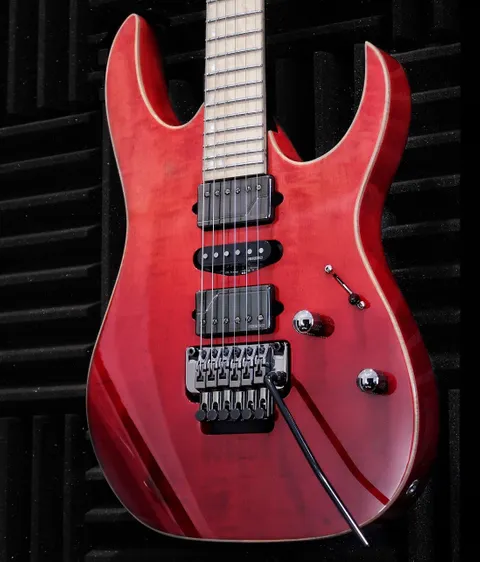
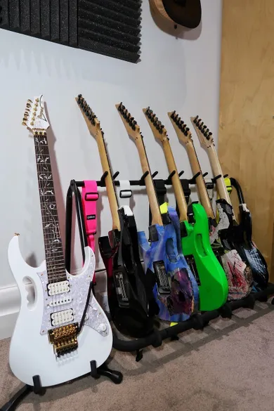
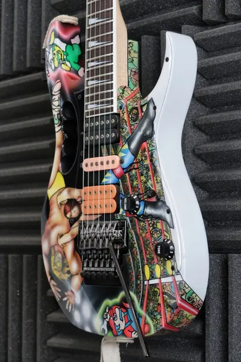

THE MOON TOWER
He opened for Ozzy Osbourne, starred in a classic Steve Vai video, landed multiple endorsement deals, and played lead guitar in his own band all way before the age of 18, but then Thomas McRocklin took a step back from the music business and vanished from the public eye. He now runs a guitar shop in Newcastle upon Tyne and has recently taken up the guitar again, releasing some new tracks in advance of a full EP coming later this year. We met him in Newcastle for a chat about what, by all accounts, is a totally unique and fascinating career in music.
So Thomas, what have you been up to for the past 20 years?
Just doing normal stuff. When I grew up, things were totally crazy with all the TV stuff, going back and forth to the States when I was in Bad4Good, then working on my instrumental stuff. I get people sending me pictures from those days and looking back on it now it was so crazy. So after all that I’ve just been doing normal family things, just switching off from the whole music industry. Initially I moved a little bit away from the guitar as I really got into electronic music. When I was living with Steve (Vai) and being in the studio with guys like Jimmy Iovine, the studio side of things was always really appealing to me. I was really interested in the mix process and the gear. A lot of times when we’d finished recording, everybody would head off and I’d really enjoy sticking around for the mixing, and then later on the mastering. I got really into that side of things, and by the time I was 17 or 18, I’d done so much as a young kid, that when I got my first sampler and sequencer, the guitar was pretty much done. There was a drastic drop of the guitar and I was full on into sequencers and sampling. Then after that it was just normal family stuff, you know – I got my first house, just did all these things that normal people did. Then once you get into that, it’s easy just to have 15, 20 years go by while you’re doing regular stuff. It just kicks in, life.

You obviously got into guitar at a really young age, were your family musical?
Yeah, I started when I was four. My dad was always a guitar player, not to the point where he was gigging, but there were always guitars in the house. The first guitar that I picked up was an old Ibanez Artist. It was like a Les Paul style, a pretty hefty old school chunk of wood. It’s funny that the first guitar I ever played was an Ibanez and now I’ve had such a history with the company. My dad would always go to work, and I’d drag the guitar out from the behind the TV or wherever it was, and he’d come home and find it was out on the floor, played with. Once he noticed I had an interest in it he showed me a few chords, The Boys Are Back In Town
by Thin Lizzy I think it was, then I just took it up from there really.
Were you self-taught?
The first couple of years were self-taught, starting off with what my dad could show me really. It was difficult, as we found by the time I was six or seven and more into rock shredding, there weren’t really any resources or decent electric guitar teachers in the local area. Then later on when I was around nine, I got into classical lessons. I think even now that influence comes through in my playing more than anything. It’s just quite a different discipline, and the theory side of things that you pick up, for me, was just invaluable. It’s like learning to ride a bike – once you get that part of it down, it’s with you forever. So I never really had electric guitar lessons, but classical and theory lessons were a big part. Theory was probably the biggest thing I took from the lessons; the shredding was just from watching all the classic videos and trying to imitate my influences at that time.
Then you managed to get an opening slot for Ozzy Osbourne…
Yeah, that was probably the first big gig I had. That was at the Mayfair (in Newcastle). At that time, it was probably all just my dad - you’ve got this boy in leathers outside backstage, so it was kind of hard to miss me. It was just by chance and the right opportunity at the right time. I think Zakk Wylde had just joined Ozzy then, there’s a picture of us together on my Instagram. Zakk’s such a beast of a guy now, but then he was like the Milky Bar Kid! Just the total opposite of what he is now. But yeah, after being outside, I think we got in during the soundcheck. Ozzy was there, Zakk and the band were there. They plugged me into Zakk’s rig and I did some playing and then they asked me to open up the show.

So that was just you on your own?
That was kind of the thing for me back then. All the Disney Club stuff and other TV appearances were just me plugging into an amp and I’d wail for 10 minutes, or until they’d say “Right, that’s it” and unplug me! But yeah, the Ozzy gig was just wild. His crowd was really into it. Good fun.
That must have been a bit daunting for an eight year old?
It’s funny because I was super shy outside, but when I got on stage and was playing there was just a switch, and it was no problem. I always felt comfortable, there were never any nerves or anything. But sitting down and doing TV stuff, I was just so quiet. It wasn’t so much that I was nervous, it was just a funny situation. Especially with my dad sitting beside me. What you gonna do, you know?
Then you ended up at Donington Monsters of Rock in 1988….
Yeah! This guy, called Stevie I think, had seen my playing somewhere and he suggested going down to the Monsters of Rock. So that was the first time I met Steve Vai, when I was eight, and again, we just got backstage somehow, right outside the tour bus. I think I was actually on the back of my dad’s car, boot up, playing a Steve Vai signature JEM, head to toe in leathers, hat on, looking exactly like a little Stevie Vai, and got spotted and invited in to the tour bus. I played David Lee Roth’s Tobacco Road, and that was it, game over from there! It wasn’t long after that when Steve had started working on the Passion and Warfare
album, then he released that, and then the music video for The Audience Is Listening. We’d kept in contact and he asked me to do that video for him, and later on he produced the Bad4Good album Refugee. I’m back in contact with Steve again actually, after a really long time. It’s kind of weird, as back then you wouldn’t just save someone’s number to your phone, you’d send them faxes and letters. I remember when the Interscope contract came through and I signed with those guys, this huge fax comes through, it was a lot of money, but I just signed it and then was back in the street on the BMX. So different… crazy.


I first saw you in an Ibanez catalogue, I think it was from 1992, there’s a little interview with you in there….
Oh really? Yeah, the interview stuff I can imagine… I was a bit quiet and wacky. The personality, especially to the US guys, was so alien. Then when I had been speaking to a lot of guys after being there for a while, I had this weird hybrid of an American accent and a hyper Geordie accent!
So after you put the guitar aside, did you keep your chops in shape?
It got to the point playing-wise where I probably played an hour in three months. Compared to when I was growing up I’d pretty much have 10 hours every day and that was it. I left school quite early and had teachers arranged around what I was doing, so in my mind, even as a really young kid, the hours that I would’ve been in school were at least the hours I’d put into the guitar.
I’d break it up into classical, rock, theory, whatever it might be. Even with Bad4Good, we’d have two or three hour rehearsals and then I’d have three or four hours practice on top of that. So it was going from a lot of hours to an hour in three months. I’d leave it weeks at a time without playing. It got to the point where I’d pick up a guitar and my hands would feel like they weren’t mine, like I was playing with boxing gloves on. So I played very little until about a year and a bit ago. It’s taken about one year, and even over the last couple of months the dexterity and playing is still improving a lot. It’s funny, people have heard me playing and I was doing trips to Ibanez, so people had an idea that I was playing again, and there were just a lot of requests for music. The early demo tracks I recorded, Clear Skies
and Storms, are in my mind stop gaps until the EP comes out. I think the benefit for me of taking such a long time off is that I play really different now compared to when I was younger. When I was at my peak as a young guy, I was maybe 17 and had a definite style then, but taking so much time off just gives you a chance to reset the whole thing and get away from all the little quirks and habits you pick up. So the first few months that I’d started playing again, I just sat really close to an amp that wasn’t that great sounding, but it showed up everything that was really wrong, that I didn’t like. The amp had quite a bright, really dry, awful sound, but the first three months just gave me the opportunity to work on things from the beginning. I think during that time too I was listening to newer players that I like on YouTube and other places, and you kind of learn what you want and what you don’t want. It became apparent that I didn’t want to sound like any of those guys, so I took the direction I was heading with my playing and exaggerated that a bit more. So I’ve got some quirks now in my playing, but I think that’s very much on purpose. It just allows different phrasing and a slightly different approach. I can play normally, but the natural default style is a little bit different. Those first three months I think were identifying that. That’s the benefit of taking 20 years off!
You mentioned that you have an EP in the works...
Yeah, I’m working on it. There’s a bunch of tracks which we narrowed down to six. It’s me and a phenomenal bass player called Anthony Bye who’s done some stuff previously with me. He lives up in Edinburgh now, but I’m hoping at some point he’s going to move down to Newcastle. We’re doing stuff online at the moment, back and forth, then we meet up once a month. There’s three of us – Anthony and a recent addition is a guy called Oscar Cassidy, he’s a great drummer. The first two demo tracks I released are programmed drums. A lot of the stuff I was really into during my time away from guitars, and still am, was electronic – drum and bass, hip hop, dubstep, house music – so we’re still going to have influences from those genres, but with a live drummer mixed in as well. Already we’ve had a couple of sessions and it’s taking a better direction. So working with that formula with the three of us, hopefully by the back end of the year the EP will be released. I think with the three of us it’s even better than I imagined, just having three sets of influences, and three mixes in the pot.
I noticed Storms
and Clear Skies
have quite a bit of electronica in them….
Exactly. I got really into mixing. Over the last six years I’ve mixed hundreds of tracks for different people, and in the last couple of years I’ve mastered even more. It’s all been different genres, but a lot of electronic stuff. That’s definitely brought another element into the creative process, in the sense that if you want those sorts of influences brought in you can keep it within the band and not have to seek outside producers to get the track to the point where it’s competing with guys that specialise in electronic music. If you’re going to execute something, like putting electronic stuff in, it’s got to compete with other stuff out there. I’m really excited when the three of us get to play together, there’s definite chemistry there. I can’t wait to get to the point where the tracks are fully complete and we can blast through them in a live situation.
Are you planning to tour the material?
Yeah, I think we can execute the tracks quite easily live with no problems. And even if we do have quite a lot of electronic influence in there, Oscar’s super-fluent with Ableton software, and playing with a click or without. The setup is really flexible, so I think we’ll definitely play live. Just cranking it up.
You clearly listen to a wide range of music, what’s some of your favourite stuff that’s been out recently?
I don’t listen to a lot of guitar music at all. If I do now and again, I like bands like Chon, Periphery… I really like Tosin Abasi, he’s phenomenal, but the type of stuff I listen to now is mainly instrumental hip hop, and stuff like that. I listen to all sorts really, whether it’s jazz or salsa and Brazilian stuff. I often just hit Spotify, find something random and play along to it or just chill out. I have a really short attention span for shred stuff, even super-impressive stuff. It’s great for 30 seconds, but then you just want to turn it off. I definitely appreciate it, but I just don’t listen to much guitar music. There are some great players around, especially instrumental music compared to when I was growing up. Back then, if you weren’t Satriani, Vai or Paul Gilbert, it was like, where do you fit in? But now instrumental guitar music is huge and there’s some really good stuff coming out. With my material I want to blend my other influences in with it, but still appeal to guitar fans.


You got an endorsement with Ibanez really early on, did you ever play anything else?
I did. Before I got my first JEM, which was the floral one, I had BC Riches, Hamers, I’ve still got them actually, along with some others too. But I remember seeing David Lee Roth’s Eat ‘Em and Smile
and Skyscraper
stuff, seeing the JEM for the first time and that was it. Back then you had to order them from the States and it took months, but I still remember the first revealing of the floral JEM when it arrived. There’s something about the necks with the jumbo frets, the neck profile, maybe because I spent so long playing classical, everything on those necks feels right. Not just the JEMs, but the RGs too, they just feel right to me. Once I hit that point with the first JEM, no other brand came into it. I’ve tried a lot of really cool stuff, but the Ibanez stuff for me is exactly what I want from a guitar. They’re not for everybody obviously, if you’re a Strat guy or a Les Paul guy, but other neck profiles don’t work as well for my hands. I don’t know if you saw the recent picture of a prototype they’re releasing but that’s quite a different direction for Ibanez. It’s going to be a new series, almost a classic Suhr vibe. They look amazing, but it’s very different from an RG or a JEM, and I think that’s really going to broaden their appeal. Ibanez are mostly known for rock and shred guitars, but I think this could give them wider appeal and I think that guitar could be tempting me as well.
I was with Ibanez from aged eight or nine and they built me some custom guitars too. The one that people remember most is the blue McRocklin guitar which was done at that time with Ibanez UK. They often used to use floral JEMs as the starting point, which seems crazy now as original floral JEMs are quite rare, but back then we used to customise them and that’s where the blue McRocklin one came from. Great guitar. It’s definitely got its own sort of vibe, but I don’t use the old ones so much now. Last year, when I got back into things, I took a trip over to Ibanez in the US, as a lot of parts that you needed for those guitars are really difficult to get over here. Even if you order from Ibanez UK, the parts come from Japan, to the US, then filter to the UK, so it’s a bit difficult. When I was there, I was sure to fill a bag with parts – trems, different things – because the old guitars have just been sat there doing nothing for so long. Sometimes I’d taken parts out of them and you lose bits along the way, but all those classic JEMs now are fully loaded and ready to go. But those necks, the old classic four bolt ones, if you snap those now it’s game over. It took a year for the Slam JEM, which was originally a floral, shaved down to ¾ size and custom painted, to come back with a new neck. Back then I used to break a lot of necks, and Steve did as well, and you could get new ones no problem, but over the years they’ve become less available. The Slam JEM I left with the Ibanez custom shop a year and a half or so ago, and they found a brand new boxed 97 RG which had the same neck pocket fit and they flew that to the US, but it took a while. So I’m a lot more cautious about those classic guitars now in terms of not throwing them around so much. There’s some really nice new RGs out there now that I was checking out at Ibanez UK and have narrowed it down to a couple which are probably going to be the new defaults for me. The old ones if they get hammered in a flight or something like that, there’s no replacing them.

Do you use 7 string much? I know you’ve got an Ibanez Universe…
I’ve got the very one that Steve used yeah, from the Passion and Warfare
album. It’s the prototype Universe which has the monkey grip handle, but then on the album cover they airbrushed that out because the production version of the Universe doesn’t have the handle on it. So yeah, it’s that very one that was used for the cover. It’s got a lot of history – when you see the Whitesnake videos you see that very guitar, with the monkey grip. Steve gave me that not long after I did the video for The Audience Is Listening. It was just before the Passion and Warfare
album was coming out, we were staying at a hotel in LA and there was a knock on the door. I opened the door and there was a pre-release copy of that album and the guitar outside my room, just gifts from Steve. But I never really got too much into the 7 string. That’s obviously quite a historic guitar, so I never really want to bash it around too much, but I had another Universe that I played and I never really took to it. Certainly back then anyway, I could probably adapt to it a lot easier now, but 7 strings just weren’t my thing really. On my new song Storms, it sounds like it’s a 7 string, but it’s just 6 string dropped to C standard with heavy strings on it. The main riff is quite low. I’m trying to avoid too much drop stuff though, most of the new stuff is 6 string regular tuning. It got to the point where I had hard tails for this track, another guitar for another track, and if we’re taking stuff on the road you really want to avoid taking too many guitars.

And pickups, what are your current favourites?
Every JEM I’ve got has DiMarzio Tone Zones in it, which I swapped for the original PAF Pros. I always wanted something a bit beefier sounding and the Tone Zone was a nice balance. It wasn’t as hot as something like the X2N which I dabbled with, but a bit more powerful than the PAF Pro. I also had an endorsement with DiMarzio which is why a lot of my JEMs have different colour pickups in. Back then, you’d just ask for a box of Tone Zones and they’d ship them out to you in every colour. Consistency is something I’m really wary of though. When I go from one JEM to another, it sounds vastly different, even though they have the same pickups. So I’ve been speaking to Fishman and trialling a bunch of the Fluence pickups. They’re a really different design – no magnets, so it’s all kind of modelled. You put a battery in it and it allows you to get the best sound of the best pickup you could possibly aim for and it’ll be the same no matter what. There are no variables as there’s essentially a circuit board under the pickup. I’m just waiting on the first guitar to come back with Fishman Fluence fitted in it. It involved quite a bit of work as it’s essentially going from a passive pickup to an active pickup, even though it’s not like a hot EMG. From what I’m hearing I’ll probably end up switching full time though. They’re keen to have me on board with their brand, and from what I hear it’s very good, almost like switching from standard definition to HD. The clarity is so much better. I should have that guitar back over the next couple of days actually with it all fitted. I’d heard great things, so it was just a case of taking the leap and doing it.
For amplification you’re using Fractal Audio?
Yeah, at the moment. I’ve tried the Line 6 Helix, and Kemper, which was very good, but I wanted something that I wouldn’t need to take pedals out with. The Helix was good, but I had a bunch of Strymon pedals I was using with it, like the Big Sky. I wanted to keep things small and portable. I’d heard Fractal on records, but I’d never played one. When I spoke to them we worked something out, I got the gear, and straight away started with a blank patch – one head, one cab – and it instantly sounded phenomenal. The response is just like a real amp when you back off on the volume, really good. Then when you go to the DSP effects, all the reverbs, delays, all the other stuff in there, they were competing with all the other algorithms from Strymon and everything else I’ve used. Everything from the amps, to the cabs, to the effects for me was world class. And the fact there’s just one rack, one controller, it’s just perfect. I love it, and I’m still getting to grips with it. I’ve got four or five patches done for the tracks we’re working on now and every time I get a spare couple of hours I download some impulse responses and work on a new sound. It’s just a beast, really cool. I’ve had it a couple of months now and am still discovering new things. If you plug it straight into a PA it’s great. I use a lot of the cabs, the impulse responses, as tones themselves. So I might have one patch based on Vintage 30s, and another one based on a completely different cab. I just use the cab blocks as tone changes. I’m working on the stage sound with it at the moment, and I think because I change cabs a lot, I’ll probably end up using full range type cabs on stage so I don’t need to disable the cab blocks and limit myself. The rig I’ll take out on the road I’m still working on as I haven’t decided 100% what speakers I’ll be using yet, but definitely the Fractal, and most likely a full range cab. I have so many different tones for different tracks, so it’s having something that’ll give me a Plexi vibe, or a Mesa vibe, or a Soldano vibe at the drop of a hat, that’s the most important part of the puzzle.


So, final question – what would be your all time fantasy band lineup that you could play in?
That’s a difficult one….. you know I’d probably have Skrillex on the drums, David Lee Roth on vocals and…… Jaco Pastorius on bass. Jazzy bass player, dubstep drums and David Lee Roth doing flying kicks around the place. I would just sit in the background and watch that, I wouldn’t even need to play!
Thomas McRocklin's new songs Storms
and Clear Skies are available now on his YouTube channel. Look out for his new EP coming out later this year. For more information, check him out on Facebook
and Instagram.
Photos courtesy of Thomas McRocklin